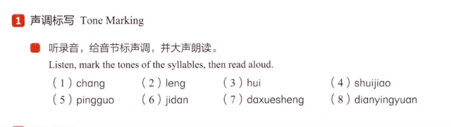
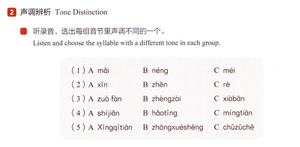
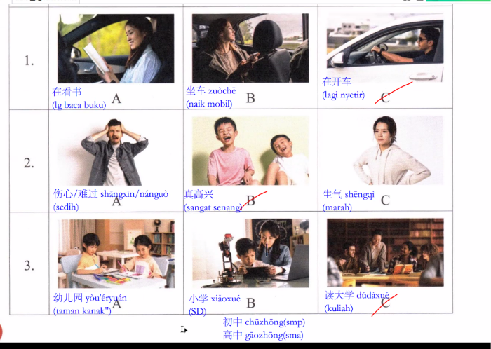
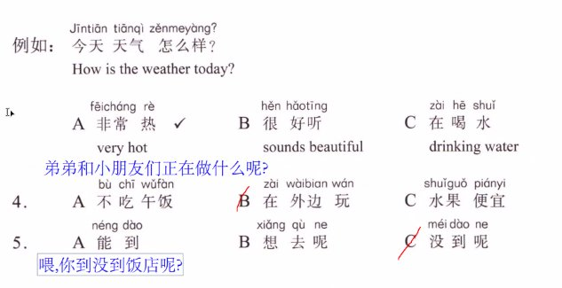
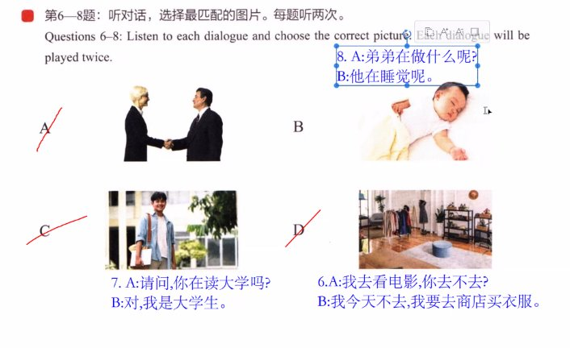
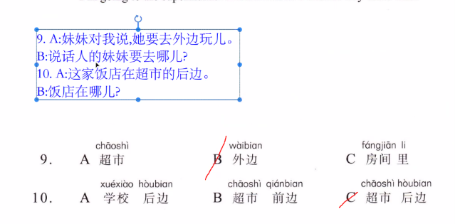
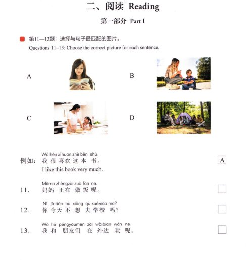
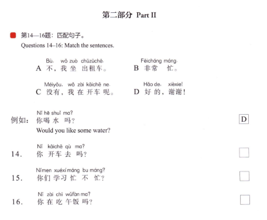
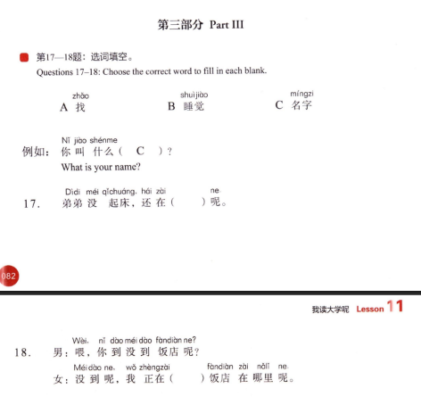
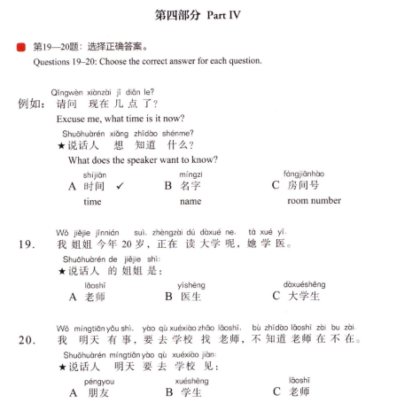

Mendengarkan audio rekaman, memberi tanda nada (tone marks / 声调) pada suku kata Pinyin, lalu melafalkannya dengan lantang.

🎧Instruksi Soal Buku (Audio 11-1)
听录音，给音节标声调，并大声朗读。
(Listen, mark the tones of the syllables, then read aloud.)
💡 Klik tombol speaker atau teks bertanda nada untuk mendengarkan pelafalan nada yang tepat dengan suara penutur asli!
No. 11 Suku Kata
Soal Bukuchang
⬇ Beri Nada
🎵 Nada 2 (ˊ) / 唱 chàng (ˋ)
长 / 唱
panjang / bernyanyi
No. 21 Suku Kata
Soal Bukuleng
⬇ Beri Nada
🎵 Nada 3 (ˇ) — nada di [ e ]
冷
dingin (suhu / cuaca)
No. 31 Suku Kata
Soal Bukuhui
⬇ Beri Nada
🎵 Nada 2 (ˊ) — di huruf [ i ]
回
kembali / pulang
No. 42 Suku Kata
Soal Bukushuijiao
⬇ Beri Nada
🎵 Nada 4 (ˋ) + Nada 4 (ˋ)
睡觉
tidur (kata kerja)
No. 52 Suku Kata
Soal Bukupingguo
⬇ Beri Nada
🎵 Nada 2 (ˊ) + Nada 3 (ˇ)
苹果
buah apel
No. 62 Suku Kata
Soal Bukujidan
⬇ Beri Nada
🎵 Nada 1 (ˉ) + Nada 4 (ˋ)
鸡蛋
telur ayam
No. 73 Suku Kata
Soal Bukudaxuesheng
⬇ Beri Nada
🎵 Nada 4 + Nada 2 + Nada 1
大学生
mahasiswa universitas
No. 83 Suku Kata
Soal Bukudianyingyuan
⬇ Beri Nada
🎵 Nada 4 + Nada 3 + Nada 4
电影院
bioskop
💡 Panduan KaidahAturan Urutan Penempatan Tanda Nada Pinyin (标调规则) : a > o > e > i > u > ü
📜 Rumus Cepat Menghafal Urutan Nada (标调歌诀):
有 a 先找 a，无 a 找 o、e，
i、u 并列标在后，单个元音不用说。
Artinya: Jika terdapat vokal a, nada selalu diletakkan di atas a; jika tidak ada, cari o atau e; bila i dan u berdampingan (seperti ui pada huì atau iu pada liù), nada selalu ditaruh pada huruf vokal yang berada paling belakang!
📌 一、语音 Pronunciation · 2 声调辨析 Tone Distinction
2
小语讲堂 · Xiaoyu's Classroom · 2 声调辨析 Tone Distinction
Mendengarkan rekaman audio dan memilih suku kata yang memiliki nada berbeda dalam setiap kelompok (A, B, atau C).

🎧Instruksi Soal Buku (Audio 11-2)
听录音，选出每组音节里声调不同的一个。
Listen to the recording and choose the syllable with a different tone in each group.
(Dengarkan rekaman audio dan pilihlah suku kata yang memiliki nada berbeda dalam setiap kelompok.)
💡 Dengarkan dan perhatikan tanda nada suku kata di bawah. Tombol bergaris tepi merah (✓ Beda Nada) adalah jawaban yang memiliki nada berbeda dari dua opsi lainnya.
( 1 )Soal Nomor 1
1 Suku Kata (Monosyllable)Jawaban: A
A🔊 Dengar
mǎi
买
membeli
Nada 3 (ˇ) ✓ Beda
B🔊 Dengar
néng
能
bisa / dapat
Nada 2 (ˊ) Naik
C🔊 Dengar
méi
没
tidak / belum
Nada 2 (ˊ) Naik
💡 Pembahasan Soal (1): Pilihan B néng (能 / bisa) dan pilihan C méi (没 / belum) sama-sama bernada Nada 2 (naik). Sedangkan pilihan A mǎi (买 / membeli) bernada Nada 3 (turun-naik), sehingga A adalah jawaban yang tepat karena bernada berbeda.
( 2 )Soal Nomor 2
1 Suku Kata (Monosyllable)Jawaban: C
A🔊 Dengar
xīn
新
baru
Nada 1 (ˉ) Datar
B🔊 Dengar
zhēn
真
sungguh / benar-benar
Nada 1 (ˉ) Datar
C🔊 Dengar
rè
热
panas
Nada 4 (ˋ) ✓ Beda
💡 Pembahasan Soal (2): Pilihan A xīn (新 / baru) dan pilihan B zhēn (真 / sungguh) keduanya bernada Nada 1 (tinggi-datar). Sedangkan pilihan C rè (热 / panas) bernada Nada 4 (turun tegas), sehingga C adalah jawaban yang tepat.
( 3 )Soal Nomor 3
2 Suku Kata (Disyllable)Jawaban: C
A🔊 Dengar
zuòfàn
做饭
memasak makanan
Nada 4 + Nada 4
B🔊 Dengar
zhèngzài
正在
sedang (berlangsung)
Nada 4 + Nada 4
C🔊 Dengar
xiàbān
下班
pulang kerja / selesai dinas
Nada 4 + 1 ✓ Beda
💡 Pembahasan Soal (3): Pilihan A zuòfàn (做饭 / memasak) dan B zhèngzài (正在 / sedang) keduanya berstruktur nada kembar Nada 4 + Nada 4. Sedangkan pilihan C xiàbān (下班 / pulang kerja) suku kata keduanya bernada datar yaitu Nada 4 + Nada 1, sehingga C adalah jawaban yang tepat karena berbeda.
( 4 )Soal Nomor 4
2 Suku Kata (Disyllable)Jawaban: B
A🔊 Dengar
shíjiān
时间
waktu / durasi
Nada 2 + Nada 1
B🔊 Dengar
hǎotīng
好听
enak didengar / merdu
Nada 3 + 1 ✓ Beda
C🔊 Dengar
míngtiān
明天
besok / hari esok
Nada 2 + Nada 1
💡 Pembahasan Soal (4): Pilihan A shíjiān (时间 / waktu) dan C míngtiān (明天 / besok) sama-sama bernada Nada 2 + Nada 1. Sedangkan pilihan B hǎotīng (好听 / enak didengar) memiliki pola nada Nada 3 + Nada 1, sehingga B adalah jawaban yang tepat.
( 5 )Soal Nomor 5
3 Suku Kata (Trisyllable)Jawaban: B
A🔊 Dengar
Xīngqītiān
星期天
hari Minggu
Nada 1 + Nada 1 + Nada 1
B🔊 Dengar
zhōngxuéshēng
中学生
siswa SMP-SMA
Nada 1 + 2 + 1 ✓ Beda
C🔊 Dengar
chūzūchē
出租车
taksi / mobil sewa
Nada 1 + Nada 1 + Nada 1
💡 Pembahasan Soal (5): Pilihan A Xīngqītiān (星期天 / hari Minggu) dan C chūzūchē (出租车 / taksi) memiliki 3 suku kata yang seluruhnya bernada datar Nada 1 + Nada 1 + Nada 1. Sedangkan pilihan B zhōngxuéshēng (中学生 / siswa SMP-SMA) memiliki suku kata tengah bernada naik yaitu Nada 1 + Nada 2 + Nada 1, sehingga B adalah jawaban yang tepat.
📌 二、听力 · Listening Part 1: 第一部分 (Soal 1–3)
听
Part 1 · 第一部分 (第 1—3 题 · 🔊 Audio 11-3)
Mendengarkan frasa pendek (setiap rekaman diputar dua kali) dan memilih gambar yang tepat (Pilihan A, B, atau C).

🎧Instruksi Soal Listening Part 1 (Audio 11-3)
第 1—3 题：听短语，选择正确图片。每题听两次。
Questions 1–3: Listen to each phrase and choose the correct picture. Each phrase will be played twice.
(Pertanyaan 1–3: Dengarkan frasa pendek, lalu pilih gambar yang tepat. Setiap nomor diperdengarkan dua kali.)
💡 Klik tombol 🔊 Putar Audio pada setiap nomor, atau klik masing-masing kartu opsi untuk mendengarkan audio rekaman penutur asli!
1
Nomor 1: Aktivitas di Mobil (在看书 vs 坐车 vs 在开车)
Pilihan A
📖🚗
在看书
zàikànshū
Sedang membaca buku
Wanita sedang membaca buku di dalam mobil (lg baca buku)
Pilihan B
🚘💺
坐车
zuòchē
Naik mobil / Penumpang
Wanita duduk di kursi penumpang belakang mobil (naik mobil)
Pilihan C
🚗👨✈️
在开车
zàikāichē
Sedang menyetir mobil
Pria memegang setir mobil dan sedang mengemudi (lagi nyetir)
✓ Kunci Jawaban (C)
Pembahasan Soal 1: Rekaman audio menyebutkan 在开车 (zài kāichē = sedang menyetir / mengemudikan mobil). Gambar C memperlihatkan seorang pria sedang memegang setir mobil. Gambar A adalah 在看书 (zài kàn shū = sedang membaca buku) dan gambar B adalah 坐车 (zuòchē = menaiki mobil sebagai penumpang). Jadi, jawaban yang tepat adalah C.
2
Nomor 2: Raut Wajah & Suasana Hati (伤心/难过 vs 真高兴 vs 生气)
Pilihan A
😣🌧️
伤心 / 难过
shāngxīn / nánguò
Bersedih / Terluka hati
Pria memegangi kepala dengan raut muka sedih & tertekan (sedih)
Pilihan B
😄🎉
真高兴
zhēngāoxìng
Sangat senang / Gembira
Dua anak laki-laki tertawa lebar penuh kegembiraan (sangat senang)
✓ Kunci Jawaban (B)
Pilihan C
😠💢
生气
shēngqì
Marah / Jengkel
Wanita berkacak pinggang dengan ekspresi wajah marah (marah)
Pembahasan Soal 2: Rekaman audio menyebutkan 真高兴 (zhēn gāoxìng = sungguh senang / sangat gembira). Gambar B memperlihatkan dua anak tertawa riang dan bahagia. Gambar A adalah 伤心 / 难过 (shāngxīn / nánguò = sedih) dan gambar C adalah 生气 (shēngqì = marah). Jadi, jawaban yang tepat adalah B.
3
Nomor 3: Jenjang Pendidikan (幼儿园 vs 小学 vs 读大学)
Pilihan A
🧒🖍️
幼儿园
yòu'éryuán
Taman Kanak-kanak (TK)
Anak-anak balita belajar mewarnai di meja kelas TK (taman kanak")
Pilihan B
🎒👦
小学
xiǎoxué
Sekolah Dasar (SD)
Ibu mendampingi anak SD belajar dengan perangkat robot/tablet (SD)
Pilihan C
🎓🏛️
读大学
dúdàxué
Kuliah di universitas
Sekelompok mahasiswa berkumpul dan berdiskusi buku di kampus (kuliah)
✓ Kunci Jawaban (C)
Pembahasan Soal 3: Rekaman audio menyebutkan 读大学 (dú dàxué = kuliah di universitas), selaras dengan judul pelajaran Bab 11 (我读大学呢). Gambar C memperlihatkan mahasiswa berdiskusi bersama buku di kampus. Gambar A adalah 幼儿园 (yòu'éryuán = TK) dan gambar B adalah 小学 (xiǎoxué = SD). Jadi, jawaban yang tepat adalah C.
📚Catatan Tambahan: Jenjang Pendidikan dalam Bahasa Mandarin (教育阶段)
Tingkat TK
幼儿园(yòu'éryuán)
Taman Kanak-kanak
Tingkat SD
小学(xiǎoxué)
Sekolah Dasar
Tingkat SMP (Catatan Buku)
初中(chūzhōng)
Sekolah Menengah Pertama
Tingkat SMA (Catatan Buku)
高中(gāozhōng)
Sekolah Menengah Atas
Tingkat Perguruan Tinggi
大学(dàxué)
Universitas / Kuliah
Aktivitas Kuliah (Frasa Bab 11)
读大学(dúdàxué)
Menempuh kuliah / berkuliah
📌 二、听力 · Listening Part 2: 第二部分 (Soal 4–5)
问
Part 2 · 第二部分 (第 4—5 题 · 🔊 Audio 11-4)
Mendengarkan pertanyaan dari rekaman audio, lalu memilih jawaban yang tepat (Pilihan A, B, atau C). Setiap soal diputar dua kali.

🎧Instruksi Soal Listening Part 2 (Audio 11-4)
第 4—5 题：听问题，选择正确回答。每题听两次。
Questions 4–5: Listen to each question and choose the correct answer. Each question will be played twice.
(Pertanyaan 4–5: Dengarkan pertanyaan, lalu pilih jawaban yang tepat. Setiap nomor diperdengarkan dua kali.)
💡Klik banner pertanyaan atau tombol 🔊 untuk mendengar rekaman audio soal, dan klik kartu opsi untuk mendengar pelafalan jawaban!
Bagaimana cuaca hari ini? (How is the weather today?)
Pilihan A
☀️🌡️
非常热
fēichángrè
Sangat panas (very hot)
✓ Kunci Contoh (A)
Pilihan B
🎵🎶
很好听
hěnhǎotīng
Sangat enak didengar / merdu
Jawaban untuk lagu / suara musik (sounds beautiful)
Pilihan C
🥤💧
在喝水
zàihēshuǐ
Sedang minum air (drinking water)
Jawaban untuk aktivitas orang yang sedang minum
Pembahasan Contoh: Pertanyaan menanyakan kondisi cuaca hari ini (今天天气怎么样？). Jawaban yang logis dan tepat untuk mendeskripsikan cuaca adalah A. 非常热 (fēicháng rè = sangat panas). Pilihan B 很好听 digunakan untuk suara/musik, dan pilihan C 在喝水 digunakan untuk aktivitas orang sedang minum.
Adik laki-laki dan teman-teman kecilnya sedang melakukan apa nih?
Pilihan A
🍱❌
不吃午饭
bùchīwǔfàn
Tidak makan siang
Bentuk negasi aksi makan siang
Pilihan B
⚽🌳
在外边玩
zàiwàibianwán
Sedang main di luar
Aktivitas sedang bermain di halaman luar ruangan
✓ Kunci Jawaban (B)
Pilihan C
🍎🏷️
水果便宜
shuǐguǒpiányi
Buah-buahan murah
Jawaban mengenai harga buah di pasar/supermarket
Pembahasan Soal 4: Pertanyaan menanyakan apa yang sedang dilakukan adik laki-laki dan teman-temannya (弟弟和小朋友们正在做什么呢？). Jawaban yang tepat mendeskripsikan aktivitas berlangsung adalah B. 在外边玩 (zài wàibian wán = sedang bermain di luar), sesuai dengan materi Bab 11 (和小朋友玩). Pilihan A menyatakan tidak makan siang (不吃午饭), dan pilihan C menyatakan buah murah (水果便宜). Jadi, jawaban yang tepat adalah B.
Bentuk negasi aksi/status (belum tiba nih di tempat)
✓ Kunci Jawaban (C)
Pembahasan Soal 5: Pertanyaan menggunakan rumus kalimat tanya afirmatif-negatif saat menelepon (喂，你到没到饭店呢？ = Halo, kamu sudah sampai restoran atau belum nih?). Bentuk jawaban menyangkal / belum terjadinya tindakan yang tepat adalah C. 没到呢 (méi dào ne = belum sampai nih). Pilihan A adalah 能到 (bisa sampai - kemampuan) dan pilihan B adalah 想去呢 (ingin pergi nih - rencana/keinginan). Jadi, jawaban yang tepat adalah C.
📌 二、听力 · Listening Part 3: 第三部分 (Soal 6–8)
话
Part 3 · 第三部分 (第 6—8 题 · 🔊 Audio 11-5)
第6—8题：听对话，选择最匹配的图片。每题听两次。(Questions 6–8: Listen to each dialogue and choose the correct picture. Each dialogue will be played twice).

🎧Instruksi Soal Listening Part 3 (Audio 11-5)
第 6—8 题：听对话，选择最匹配的图片。每题听两次。
Questions 6–8: Listen to each dialogue and choose the correct picture. Each dialogue will be played twice.
(Pertanyaan 6–8: Dengarkan percakapan, lalu pilih gambar yang paling cocok. Setiap nomor diperdengarkan dua kali.)
💡Dengarkan dialog tanya-jawab antara pembicara A dan B, lalu cocokkan dengan gambar A, B, C, atau D. Klik baris dialog untuk memutar audio!
🖼️ Pilihan Gambar Acuan Buku (A, B, C, D):
Gambar A
🤝👔
握手/会面
(wòshǒu/huìmiàn)
Dua orang profesional berjas sedang berjabat tangan (Opsi Contoh)
Gambar B ✓
👶💤
睡觉/弟弟
(shuìjiào/dìdi)
Bayi / adik kecil sedang tertidur lelap (Kunci Soal 8)
Gambar C ✓
🎓🎒
读大学/大学生
(dúdàxué/dàxuéshēng)
Mahasiswa membawa buku di kampus universitas (Kunci Soal 7)
Gambar D ✓
👗🏬
买衣服/商店
(mǎiyīfu/shāngdiàn)
Toko pakaian / butik dengan rak pakaian tergantung (Kunci Soal 6)
6Soal No. 6: Rencana Menonton Film vs Beli Baju di Toko
👗 Kecocokan Gambar D: 我要去商店买衣服 ✓
Klik baris untuk memutar audio 🔊
A:我去看电影，你去不去？Wǒqùkàndiànyǐng, nǐqùbuqù?
Saya mau pergi menonton film, kamu mau ikut pergi atau tidak?
Hari ini saya tidak pergi, saya mau pergi ke toko membeli pakaian.
Pembahasan Soal 6: Pembicara B menolak ajakan menonton bioskop dengan alasan 我要去商店买衣服 (wǒ yào qù shāngdiàn mǎi yīfu = saya mau pergi ke toko membeli baju). Gambar D memperlihatkan ruangan toko busana dengan rak gantungan pakaian. Jadi, jawaban yang paling cocok adalah D.
7Soal No. 7: Kuliah & Status Mahasiswa
🎓 Kecocokan Gambar C: 对，我是大学生。 ✓
Klik baris untuk memutar audio 🔊
A:请问，你在读大学吗？Qǐngwèn, nǐzàidúdàxuéma?
Permisi, apakah Anda sedang kuliah?
B:对，我是大学生。Duì, wǒshìdàxuéshēng.
Benar, saya adalah seorang mahasiswa.
Pembahasan Soal 7: Percakapan mengonfirmasi status pendidikan: pembicara A bertanya 你在读大学吗？ dan B menjawab 对，我是大学生 (duì, wǒ shì dàxuéshēng = benar, saya mahasiswa). Gambar C memperlihatkan seorang pemuda membawa buku dan tas di area kampus. Jadi, jawaban yang paling cocok adalah C.
Pembahasan Soal 8: Pembicara B menerangkan bahwa 他在睡觉呢 (tā zài shuìjiào ne = dia sedang tidur nih) dengan tata bahasa pola tindakan berlangsung (在 + 睡觉 + 呢). Gambar B memperlihatkan seorang bayi/anak kecil yang sedang tertidur pulas. Jadi, jawaban yang paling cocok adalah B.
📌 二、听力 · Listening Part 4: 第四部分 (Soal 9–10)
句
Part 4 · 第四部分 (第 9—10 题 · 🔊 Audio 11-6)
第9—10题：听句子和问话，选择正确答案。每题听两次。(Questions 9–10: Listen to each sentence and question, and choose the correct answer. Each sentence and question will be played twice).

🎧Instruksi Soal Listening Part 4 (Audio 11-6)
第 9—10 题：听句子和问话，选择正确答案。每题听两次。
Questions 9–10: Listen to each sentence and question, and choose the correct answer. Each sentence and question will be played twice.
(Pertanyaan 9–10: Dengarkan kalimat pernyataan dan pertanyaan audio, lalu pilih jawaban yang tepat. Setiap nomor diperdengarkan dua kali.)
💡Klik tombol 🔊 untuk memutar rekaman kalimat & pertanyaan, lalu klik kartu opsi (A, B, C) untuk mendengarkan lafal pilihan jawaban!
9
Soal No. 9: Tempat Adik Perempuan Pergi (妹妹对我说，她要去外边玩儿。)
Pernyataan Pembicara (Audio):
妹妹对我说，她要去外边玩儿。
Mèimeiduìwǒshuō, tāyàoqùwàibianwánr.
Adik perempuan berkata kepada saya, dia mau pergi bermain di luar. (Younger sister said to me that she wants to go outside to play.)
Pertanyaan Audio (问 · Sesuai Lembar Soal):
说话人的妹妹要去哪儿？
Shuōhuàréndemèimeiyàoqùnǎr?
Adik perempuannya pembicara mau pergi ke mana? (Where does the speaker's younger sister want to go?)
Pilihan Jawaban Soal 9:
A超市(chāoshì)— Supermarket
B外边(wàibian)— Di luar ruangan✓ Kunci Jawaban
C房间里(fángjiānli)— Di dalam kamar
Pembahasan Soal 9: Kalimat audio menyebutkan: 她要去外边玩儿 (tā yào qù wàibian wánr = dia mau pergi bermain di luar) dengan bentuk kata fonetik Erhua (玩儿 wánr). Pertanyaan menanyakan ke mana adik perempuan akan pergi (要去哪儿？). Jawaban yang paling tepat adalah B. 外边 (wàibian = di luar). Opsi A adalah 超市 (supermarket) dan opsi C adalah 房间里 (di dalam kamar).
10
Soal No. 10: Posisi Arah Restoran (这家饭店在超市的后边。)
Pernyataan Pembicara (Audio):
这家饭店在超市的后边。
Zhèjiāfàndiànzàichāoshìdehòubian.
Restoran ini berada di sebelah belakang supermarket. (This restaurant is behind the supermarket.)
Pertanyaan Audio (问 · Sesuai Lembar Soal):
饭店在哪儿？
Fàndiànzàinǎr?
Restoran berada di mana? (Where is the restaurant?)
Pilihan Jawaban Soal 10:
A学校后边(xuéxiàohòubian)— Di belakang sekolah
B超市前边(chāoshìqiánbian)— Di depan supermarket
C超市后边(chāoshìhòubian)— Di belakang supermarket✓ Kunci Jawaban
Pembahasan Soal 10: Kalimat audio menyatakan posisi restoran: 这家饭店在超市的后边 (zhè jiā fàndiàn zài chāoshì de hòubian = restoran ini di sebelah belakang supermarket) dengan kata posisi arah 后边 (hòubian = bagian belakang). Pertanyaan menanyakan letak restoran (饭店在哪儿？). Jawaban yang paling tepat adalah C. 超市后边 (chāoshì hòubian = belakang supermarket). Opsi A adalah 学校后边 (belakang sekolah) dan opsi B adalah 超市前边 (depan supermarket).
📌 三、阅读 · Reading Part 1: 第一部分 (Soal 11–13)
阅
Reading Part 1 · 第一部分 (第 11—13 题)
第11—13题：选择与句子最匹配的图片。(Questions 11–13: Choose the correct picture for each sentence / Pilih gambar yang paling cocok untuk setiap kalimat).

📖Petunjuk & Format Soal Reading Part 1
第11—13题：选择与句子最匹配的图片。
Bahasa Inggris: Questions 11–13: Choose the correct picture for each sentence. Bahasa Indonesia: Pertanyaan 11–13: Bacalah setiap kalimat, lalu tentukan gambar (A, B, C, atau D) yang paling sesuai.
💡 Klik kartu gambar atau baris kalimat untuk mendengarkan pelafalan audio dengan suara penutur asli!
🖼️ Pilihan Gambar Tersedia (A — D):
Gambar A (Contoh)
📖👩
看书(kànshū)
Wanita tersenyum sedang membaca buku (Buku bacaan)
Gambar B ✓
👩👦🎒
不想去学校(bùxiǎngqùxuéxiào)
Ibu menasihati anak laki-laki yang enggan pergi sekolah (Kunci Soal 12)
Gambar C ✓
👩🍳🍳
正在做饭(zhèngzàizuòfàn)
Ibu dan anak perempuan mengolah adonan memasak di dapur (Kunci Soal 11)
Gambar D ✓
🏕️🌲
在外边玩(zàiwàibianwán)
Sekelompok teman berkumpul dan berkemah/main di luar (Kunci Soal 13)
例如 (Contoh Soal)
📖 Kunci Contoh: Gambar A ✓
我很喜欢这本书。
Wǒhěnxǐhuanzhèběnshū.
Arti Terjemahan: Saya sangat menyukai buku ini. (I like this book very much.)
Pembahasan Contoh: Kalimat menyebutkan 我很喜欢这本书 (Wǒ hěn xǐhuan zhè běn shū = Saya sangat menyukai buku ini). Gambar yang paling cocok adalah Gambar A yang memperlihatkan seorang wanita sedang tersenyum sambil membaca buku.
11
Soal No. 11: Ibu Sedang Memasak (妈妈正在做饭呢。)
🍳 Kunci Jawaban: Gambar C ✓
妈妈正在做饭呢。
Māmazhèngzàizuòfànne.
Arti Terjemahan: Ibu sedang memasak makanan nih. (Mother is cooking food right now.)
Pembahasan Soal 11: Kalimat menyatakan 妈妈正在做饭呢 (Māma zhèngzài zuò fàn ne = Ibu sedang memasak nih) dengan pola kalimat aksi yang sedang berlangsung 正在……呢. Gambar yang paling cocok adalah Gambar C yang memperlihatkan ibu dan anak perempuan sedang mengolah adonan makanan di dapur.
12
Soal No. 12: Tidak Ingin Pergi Sekolah (你今天不想去学校吗？)
🎒 Kunci Jawaban: Gambar B ✓
你今天不想去学校吗？
Nǐjīntiānbùxiǎngqùxuéxiàoma?
Arti Terjemahan: Apakah hari ini kamu tidak ingin pergi ke sekolah? (Don't you want to go to school today?)
Pembahasan Soal 12: Kalimat berupa pertanyaan 你今天不想去学校吗？ (Nǐ jīntiān bù xiǎng qù xuéxiào ma? = Apakah hari ini kamu tidak ingin pergi ke sekolah?) dengan kata modal negasi keinginan 不想 (bù xiǎng). Gambar yang paling cocok adalah Gambar B yang memperlihatkan ibu sedang berjongkok menasihati putranya yang cemberut/enggan ke sekolah di luar rumah.
13
Soal No. 13: Bermain di Luar Bersama Teman (我和朋友们在外边玩呢。)
🏕️ Kunci Jawaban: Gambar D ✓
我和朋友们在外边玩呢。
Wǒhépéngyoumenzàiwàibianwánne.
Arti Terjemahan: Saya dan teman-teman sedang bermain di luar nih. (My friends and I are playing outside.)
Pembahasan Soal 13: Kalimat menyatakan 我和朋友们在外边玩呢 (Wǒ hé péngyoumen zài wàibian wán ne = Saya dan teman-teman sedang bermain di luar nih) dengan kata tempat 外边 (di luar) dan pola 在……玩呢 (sedang bermain). Gambar yang paling cocok adalah Gambar D yang memperlihatkan sekelompok teman berkumpul dan berkemah/bermain di alam terbuka dengan tenda.
📌 三、阅读 · Reading Part 2: 第二部分 (Soal 14–16)
阅
Reading Part 2 · 第二部分 (第 14—16 题)
第14—16题：匹配句子。(Questions 14–16: Match the sentences / Pasangkan pertanyaan dengan respon yang sesuai).

📋Petunjuk & Format Soal Reading Part 2
第14—16题：匹配句子。
Bahasa Inggris: Questions 14–16: Match the sentences. Bahasa Indonesia: Pertanyaan 14–16: Pasangkan setiap pertanyaan dengan respon kalimat (A, B, C, atau D) yang paling sesuai.
💡 Klik kartu respon atau baris kalimat untuk mendengarkan audio pelafalan alami Mandarin!
📦 Pilihan Respon Tersedia (A — D):
A:不，我坐出租车。
Bù, wǒzuòchūzūchē.
– Tidak, saya naik taksi.
B:非常忙。
Fēichángmáng.
– Sangat / amat sibuk.
C:没有，我在开车呢。
Méiyǒu, wǒzàikāichēne.
– Tidak, saya sedang menyetir mobil nih.
D:好的，谢谢！Contoh (D)
Hǎode, xièxie!
– Baiklah, terima kasih! (Jawaban Contoh)
例如 (Contoh Soal)
Kalimat Tanya Contoh:
你喝水吗？
Nǐhēshuǐma?
Arti Terjemahan: Apakah kamu mau minum air? (Would you like some water?)
💡 Penjelasan Contoh: Pertanyaan menawarkan minum (你喝水吗？). Tanggapan yang sopan dan logis adalah menerima tawaran tersebut dengan D. 好的，谢谢！ (Baiklah, terima kasih!).
Nomor 14Menanyakan Moda Transportasi Pergi (你开车去吗？)
Pertanyaan:
你开车去吗？
Nǐkāichēqùma?
Arti Terjemahan: Apakah kamu pergi dengan menyetir mobil sendiri? (Do you drive there?)
Pembahasan Soal 14: Pertanyaan 你开车去吗？ menanyakan apakah lawan bicara pergi naik mobil menyetir sendiri. Jawaban yang paling tepat dan logis adalah menyangkalnya lalu menyebutkan moda transportasi lain: A. 不，我坐出租车。 (Tidak, saya naik taksi.).
Nomor 15Menanyakan Tingkat Kesibukan Belajar (你们学习忙不忙？)
Pertanyaan:
你们学习忙不忙？
Nǐmenxuéxímángbumáng?
Arti Terjemahan: Apakah studi/belajar kalian sibuk atau tidak? (Are your studies busy or not?)
Jawaban Tepat: B ✓
B: 非常忙。 (Fēichángmáng.) – Sangat / amat sibuk.
Pembahasan Soal 15: Pertanyaan berbentuk pilihan afirmatif-negatif 忙不忙？ (sibuk tidak?) menanyakan kadar kesibukan belajar. Respon yang paling tepat adalah menyatakan derajat kesibukannya: B. 非常忙。 (Sangat / amat sibuk.).
Nomor 16Menanyakan Tindakan Berlangsung (你在吃午饭吗？)
Pertanyaan:
你在吃午饭吗？
Nǐzàichīwǔfànma?
Arti Terjemahan: Apakah kamu sedang makan siang? (Are you having lunch?)
Jawaban Tepat: C ✓
C: 没有，我在开车呢。 (Méiyǒu, wǒzàikāichēne.) – Tidak, saya sedang menyetir mobil nih.
Pembahasan Soal 16: Pertanyaan 你在吃午饭吗？ menanyakan apakah sedang melakukan tindakan makan siang dengan aspek progresif (在……吗). Jawaban membantah dengan 没有 (tidak sedang) dan menerangkan aktivitas yang sesungguhnya sedang dilakukan: C. 没有，我在开车呢。 (Tidak, saya sedang menyetir mobil nih.).
📌 三、阅读 · Reading Part 3: 第三部分 (Soal 17–18)
填
Reading Part 3 · 第三部分 (第 17—18 题)
第17—18题：选词填空。(Questions 17–18: Choose the correct word to fill in each blank / Pilihlah kata yang tepat untuk mengisi titik-titik).

✏️Petunjuk & Format Soal Reading Part 3
第17—18题：选词填空。
Bahasa Inggris: Questions 17–18: Choose the correct word to fill in each blank. Bahasa Indonesia: Pertanyaan 17–18: Pilihlah kata yang paling tepat untuk mengisi bagian rumpang dalam kalimat.
💡 Klik kartu kata atau baris kalimat untuk mendengarkan audio pelafalan alami Mandarin!
📦 Pilihan Kosakata Tersedia (A — C):
A:找(zhǎo)= mencari
B:睡觉(shuìjiào)= tidur
C:名字(míngzi)= nama
CONTOH例如 (Lìrú)
Kunci Contoh: [ C ✓ ] (名字 / míngzi)
你叫什么名字？
Nǐjiàoshénmemíngzi?
Arti Terjemahan: Siapa namamu? (Kamu dipanggil nama apa?) (What is your name?)
🔊 Klik untuk mendengarkan lafal kalimat lengkap
💡 Penjelasan Contoh: Pola baku untuk menanyakan nama seseorang dalam bahasa Mandarin adalah 你叫什么名字？ (Nǐ jiào shénme míngzi?). Kata yang tepat untuk mengisi titik-titik setelah kata tanya shénme... adalah pilihan C (míngzi / 名字 = nama).
17Soal No. 17: Melengkapi Kalimat Kondisi Berlangsung (睡觉 · shuìjiào)
弟弟没起床，还在睡觉呢。
Dìdiméiqǐchuáng, háizàishuìjiàone.
Arti Terjemahan: Adik laki-laki belum bangun tidur, masih sedang ( tidur ) nih. (Little brother hasn't gotten up yet, he's still sleeping.)
🔊 Klik untuk mendengarkan lafal kalimat lengkap
Pilihan Kata: B ✓睡觉 (shuìjiào = tidur)
💡 Penjelasan Soal 17: Klausa pertama berbunyi 弟弟没起床 (Adik belum bangun tidur), sehingga pada klausa kedua dengan pola aksi yang berlanjut 还在……呢 (masih sedang ... nih) kata kerja yang paling logis dan bersesuaian adalah B. 睡觉 (shuìjiào = tidur).
Arti Terjemahan: "Belum sampai nih, saya sedang ( mencari ) di mana letak restorannya nih." (Not yet, I'm looking for where the restaurant is right now.)
Pilihan Kata: A ✓找 (zhǎo = mencari)
💡 Penjelasan Soal 18: Pembicara wanita menjawab 没到呢 (belum sampai nih) karena sedang berusaha menemukan keberadaan lokasi: 我正在找饭店在哪里呢 (Saya sedang mencari restoran ada di mana nih). Kata kerja yang tepat berpasangan dengan objek klausa lokasi tempat adalah A. 找 (zhǎo = mencari).
喂 (wèi) = Halo (telepon)到没到 (dào méi dào) = Sudah sampai belum饭店 (fàndiàn) = Restoran / rumah makan正在……呢 (zhèngzài...ne) = Sedang (berlangsung)找 (zhǎo) = Mencari在哪里 (zài nǎli) = Ada di mana
📌 三、阅读 · Reading Part 4: 第四部分 (Soal 19–20)
答
Reading Part 4 · 第四部分 (第 19—20 题)
第19—20题：选择正确答案。(Questions 19–20: Choose the correct answer / Bacalah kalimat pengantar lalu pilih jawaban A, B, atau C).

📌Petunjuk & Format Soal Reading Part 4
第19—20题：选择正确答案。
Bahasa Inggris: Questions 19–20: Choose the correct answer for each question. Bahasa Indonesia: Pertanyaan 19–20: Bacalah kalimat pengantar, lalu jawab pertanyaan bertanda bintang (★) dengan memilih opsi A, B, atau C.
💡 Klik kalimat pengantar, pertanyaan, atau pilihan jawaban untuk mendengarkan audio pengucapan alami Mandarin!
19
Soal No. 19: Kakak Sedang Kuliah Kedokteran (我姐姐今年20岁，正在读大学呢，她学医。)
Teks Pengantar · 句子:
我姐姐今年20岁，正在读大学呢，她学医。
Wǒjiějiejīnnián20suì, zhèngzàidúdàxuéne, tāxuéyī.
Arti Terjemahan: Kakak perempuan saya tahun ini berusia 20 tahun, sedang kuliah, dia belajar kedokteran. (My elder sister is 20 years old this year, she is currently studying at university, studying medicine.)
Pertanyaan Berbintang · 问:
★ 说话人的姐姐是：
★ Shuōhuàréndejiějieshì:
Arti Terjemahan: Kakak perempuan pembicara adalah seorang: (The speaker's elder sister is a:)
A. 老师(lǎoshī)= Guru (teacher)
B. 医生(yīshēng)= Dokter (doctor)
C. 大学生(dàxuéshēng)= Mahasiswa (college student)✓
💡 Pembahasan Soal 19: Teks pengantar menyebutkan: 正在读大学呢 (sedang kuliah) dan 她学医 (dia belajar kedokteran). Statusnya saat ini masih berstatus mahasiswa (kuliah kedokteran), bukan dokter yang sudah berpraktik. Maka jawaban yang paling tepat adalah C. 大学生 (dàxuéshēng = mahasiswa).
姐姐 (jiějie) = Kakak perempuan今年 (jīnnián) = Tahun ini岁 (suì) = Tahun (usia)读大学 (dú dàxué) = Kuliah / kuliah di universitas学医 (xué yī) = Belajar ilmu kedokteran大学生 (dàxuéshēng) = Mahasiswa
20
Soal No. 20: Ke Sekolah Menemui Guru (我明天有事，要去学校找老师，不知道老师在不在。)
Arti Terjemahan: Besok saya ada urusan, mau pergi ke sekolah menemui/mencari guru, tidak tahu apakah gurunya ada atau tidak. (I have something to do tomorrow, I have to go to school to find the teacher, I don't know whether the teacher is there or not.)
Pertanyaan Berbintang · 问:
★ 说话人明天要去学校见：
★ Shuōhuàrénmíngtiānyàoqùxuéxiàojiàn:
Arti Terjemahan: Pembicara besok mau pergi ke sekolah untuk menemui: (The speaker wants to go to school tomorrow to meet:)
A. 朋友(péngyou)= Teman (friend)
B. 学生(xuésheng)= Murid / siswa (student)
C. 老师(lǎoshī)= Guru (teacher)✓
💡 Pembahasan Soal 20: Teks pengantar dengan jelas menyatakan: 要去学校找老师 (mau pergi ke sekolah mencari/menemui guru) dan 不知道老师在不在 (tidak tahu apakah guru ada atau tidak). Kata 见 (menemui) pada kalimat pertanyaan semakna dengan kata 找 (mencari/menemui) guru. Maka yang ingin ditemui adalah C. 老师 (lǎoshī = guru).
明天 (míngtiān) = Besok有事 (yǒu shì) = Ada urusan要去 (yào qù) = Mau pergi找老师 (zhǎo lǎoshī) = Mencari / menemui guru不知道 (bù zhīdào) = Tidak tahu在不在 (zài bu zài) = Ada atau tidak见 (jiàn) = Bertemu / menemui老师 (lǎoshī) = Guru